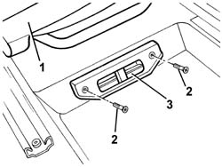

5010C44 AIR DIFFUSER TO REAR SEAT - R+R
- Path
- Procedures > 50 AUXILIARY UNITS > 5010 HEATING/VENTILATION - MISCELLANEOUS > 5010C AIR OUTLET AND DIFFUSERS > 5010C44 AIR DIFFUSER TO REAR SEAT - R+R
- Kind
- repair procedure (removal / refitting; the operation number is the code)
- Applies to
- engines: 2.0 JTS, 3.2 V6, 1.9 JTD 16V; all production periods
- Interactive page
- https://sloeber94.github.io/elrnDB-aGt/en/#/125001508
Applies to: engines: 2.0 JTS, 3.2 V6, 1.9 JTD 16V; all production periods
 Removing
Removing
 Refitting
Refitting1. Move the front seat completely forwards.
2. Undo the bolts.
3. Remove the vent.

Applies to: engines: 2.0 JTS, 3.2 V6, 1.9 JTD 16V; all production periods
Refitting
RemovingCheck that the diffuser is not damaged.
Position the diffuser attaching it to the internal duct.
Tighten the bolts.
Return the seat to the correct position.
Check that the air flow reaches the vent correctly.